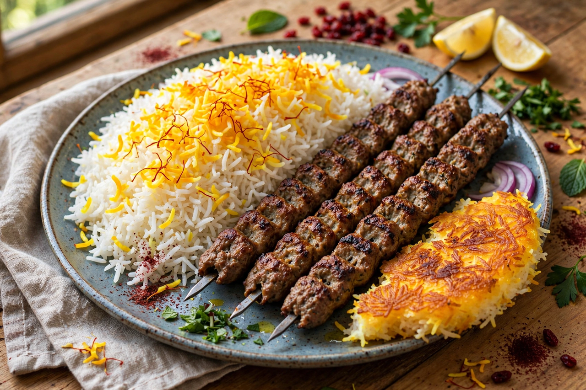

Persian cuisine
From Wikipedia, the free encyclopedia

Persian cuisine, the cooking of Iran, is one of the world's old, great cuisines — a Silk Road crossroads style built on rice mastery, gentle sourness, fresh herbs by the handful, and the perfume of saffron, rosewater and dried lime. Its signature techniques include chelow (rice parboiled, drained and steamed to separate grains), tahdig (the coveted crisp golden crust at the pot's base), and the khoresh — slow stews such as herb-green ghormeh sabzi and walnut-pomegranate fesenjan — served over that rice. Iran grows the overwhelming majority of the world's saffron, and its table balances "hot" and "cold" foods in a humoral logic inherited from medieval medicine.
Rice and kebabs
Chelow kebab — saffron rice with grilled meat — is often called the national dish: koobideh (hand-minced lamb or beef with onion), barg (marinated fillet), and joojeh (saffron-yoghurt chicken) at its centre, with grilled tomato and raw onion. Mixed rices (polow) carry barberries (zereshk polow), sour cherries, lentils and raisins, or dill and broad beans. Bread is the second pillar: sangak baked on pebbles, blistered barbari, lavash for wrapping. Every region adds its own: Tabriz's giant koofteh meatballs, the Caspian's fish and garlic, Shiraz's salads and faludeh, the rose-ice dessert that may be one of the world's oldest frozen sweets.
Festivals and structure
At Nowruz, the Persian New Year, the table is a text: the haft-sin spread of symbolic S-items and a meal of sabzi polow mahi — herbed rice with fish — for spring renewal. Meals are communal and sequential hospitality is a point of honour (ta'arof governs the ritual refusals). Tea, poured strong and taken through a sugar cube held in the teeth, punctuates everything. Persian cooking's diaspora after 1979 carried it to Los Angeles ("Tehrangeles") and beyond, where its rice crusts and sour stews win converts plate by plate.